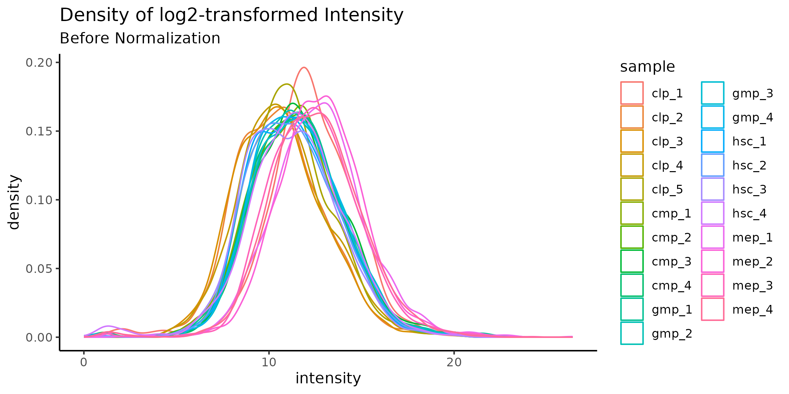
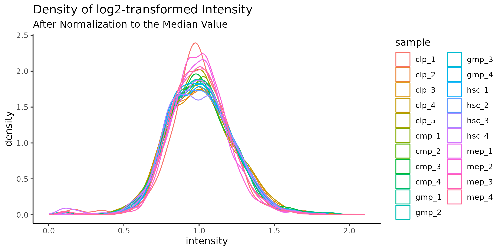

Proteomics Data from Murine Blood Cells
A Collaborative Data Science Project by Group 6
1 Introduction to the data
Dataset is unpublished data from a research group at DTU
Proteomics data from bone marrow of a single mouse measured by mass spectroscopy
Intensity is a measure of how much each protein is expressed
Right column
::: {.cell}
::: {.cell-output .cell-output-stdout}
```
# A tibble: 5 × 5
protein_groups genes cell_type replicate_n intensity
<chr> <chr> <chr> <dbl> <dbl>
1 Q9EPK6 Sil1 clp 4 0.298
2 P41216 Acsl1 clp 4 1.00
3 P56960 Exosc10 clp 5 0.349
4 Q9QYC0;Q9QYC0-2 Add1 hsc 1 1.07
5 A2APB8 Tpx2 clp 5 0.349
```
:::
:::
{.absolute bottom=0 right=50 width="300" height="300"}| Cell Type | HSC | CLP | CMP | GMP | MEP | Total |
|---|---|---|---|---|---|---|
| No. of Proteins | 2196 | 2382 | 1986 | 2291 | 2691 | 3765 |
| No. of replicates (samples) | 4 | 5 | 4 | 4 | 4 | 21 |
2 Data tidying and data format
- 5 dataframes joined using
full_join() - Simplified variable names
- Original data was in wide format
pivot_longer()to get just one intensity colomn- We discussed whether we wanted long or wide format
3 Augmenting the data
log2 transformation of the values (common for mass spectrometry proteomics data)
individual protein intensities are normalised to the median of each sample
intensities across the different cell types are normalized (due different to cell count)
missing values (detection limit of the mass spectrometer) replacing sample-wise and feature-wise
which plots to showcase??????


4 PCA Function
-here Saxe explains how the data was augmented for PCA and shows a snippet of the dataframe he is working with
# Set the bitmap type to 'cairo' to avoid PNG issue
options(bitmapType = 'cairo')
#Input data tois wide format, excluding columns with missing data.
# The new data-frame for df_no_na_wide is called : df_feature_wide.
# For creating a column sample as a guiding column use:
# mutate
df_feature_wide |>
mutate(sample = str_c(cell_type, replicate_n, sep = "_"))
df_input <- df_no_na_wide |> select(-c('sample','cell_type')) |>
mutate(across(where(is.list), ~ sapply(., function(x) x[1]))) |>
na.omit() 5 PCA Function
-here Saxe shows PCA plots and interprets them
# Set the bitmap type to 'cairo' to avoid PNG issue
options(bitmapType = 'cairo')
#Input data tois wide format, excluding columns with missing data.
# The new data-frame for df_no_na_wide is called : df_feature_wide.
# For creating a column sample as a guiding column use:
# mutate
df_feature_wide |>
mutate(sample = str_c(cell_type, replicate_n, sep = "_"))
df_input <- df_no_na_wide |> select(-c('sample','cell_type')) |>
mutate(across(where(is.list), ~ sapply(., function(x) x[1]))) |>
na.omit()
colourby <- df_no_na_wide$cell_type
# Set the bitmap type to 'cairo' to avoid PNG issue
options(bitmapType = 'cairo')
#Input data tois wide format, excluding columns with missing data.
# The new data-frame for df_no_na_wide is called : df_feature_wide.
# For creating a column sample as a guiding column use:
# mutate
df_feature_wide |>
mutate(sample = str_c(cell_type, replicate_n, sep = "_"))
df_input <- df_no_na_wide |> select(-c('sample','cell_type')) |>
mutate(across(where(is.list), ~ sapply(., function(x) x[1]))) |>
na.omit()
colourby <- df_no_na_wide$cell_type
#Projecting data unto principal components (pc)
pc <- prcomp(df_input, center = FALSE, scale = FALSE)
#Gives overview of variability of PC
#print(pc)
#Gives an overview, you should be able to tell the variance already here even without the plot
summary(pc)
#Takes the principal component values (pc$x)
pc$x |> as.data.frame() |>
ggplot(aes(x = PC1, y = PC2, color = colourby)) +
geom_point(size = 2.5)6 Volcano - Function
although longer format is often preferred, we found that for calculating fold and q value (between two cell types) wider format is a better solution, q value is then simply added by using
mutate().even if there is an existing function for T test, we made our own, which is more adjusted to our input
as there is multiple possible comparisons between cell types, we decided to build a function which which as an output will have a new dataframe, with 2 cell types of interest
7 Function
volcano_augment <- function(df, later_cell, earlier_cell, n_later, n_earlier){
data_set_for_visualisation <- df |>
ungroup() |> # Ungrup the data_frame to avoid miscalculations.
select(c(protein_groups,
!!sym(paste0("mean_", earlier_cell)),
!!sym(paste0("mean_", later_cell)),
!!sym(paste0("sd_", later_cell)),
!!sym(paste0("sd_", earlier_cell)))) |>
#!!sym() is used to evaluate the result as a column name..
mutate(fold_log2 = log2(!!sym(paste0("mean_", later_cell)) /!!sym(paste0("mean_", earlier_cell))),
p_val = pval(!!sym(paste0("mean_", later_cell)),
!!sym(paste0("mean_", earlier_cell)),
n_later, n_earlier,
!!sym(paste0("sd_", later_cell)),
!!sym(paste0("sd_", earlier_cell))),
q_val = (p.adjust(p_val))) |>
mutate(expression = case_when(fold_log2 > 0 & q_val <= 0.05 ~ "overexpressed",
fold_log2 < 0 & q_val <= 0.05 ~ "underexpressed",
q_val > 0.05 ~ "not significant")) |>
select(protein_groups, fold_log2, q_val, expression)
return(data_set_for_visualisation)
})7 Volcano Plot
- log2(fold) vs log10(q_values) plot is a rule of thumb in proteomics


##8 Uniprot Arne talks about the uniprot function and how we automatized what Antonio talks about
9 Discussion
- 5 dataframes are merged into 1
- data is cleaned and pivoted longer in order to separate cell type and number of measurment
- data is log2 transformed and normalised
- data is pivoted wider again in order to do the calculations between cell groups
- results are showcased with 4 volcano plots
- PCA shows us simmilarity between different cell types, and potentialy pathway of stem cell development
- what other problems have we had? how did we solve it? why did we choose to do it in that way?
10 Take away messages / Conclusion
Write some conclusion here
Group 6